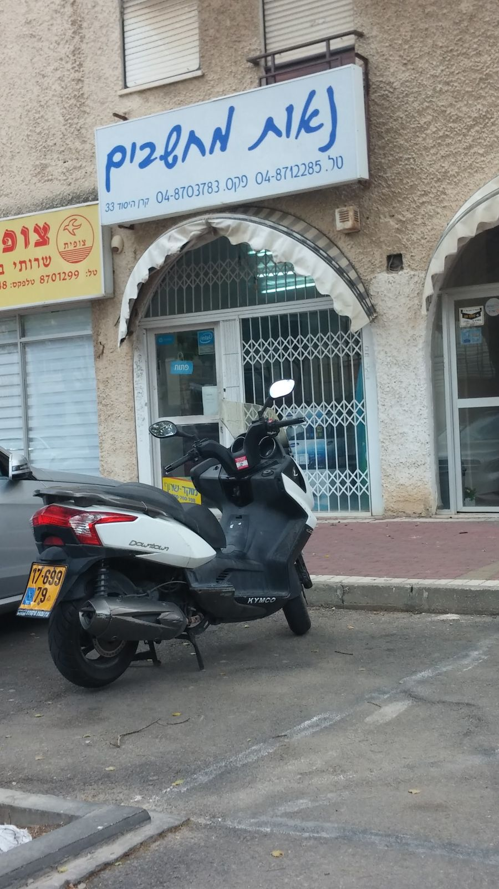
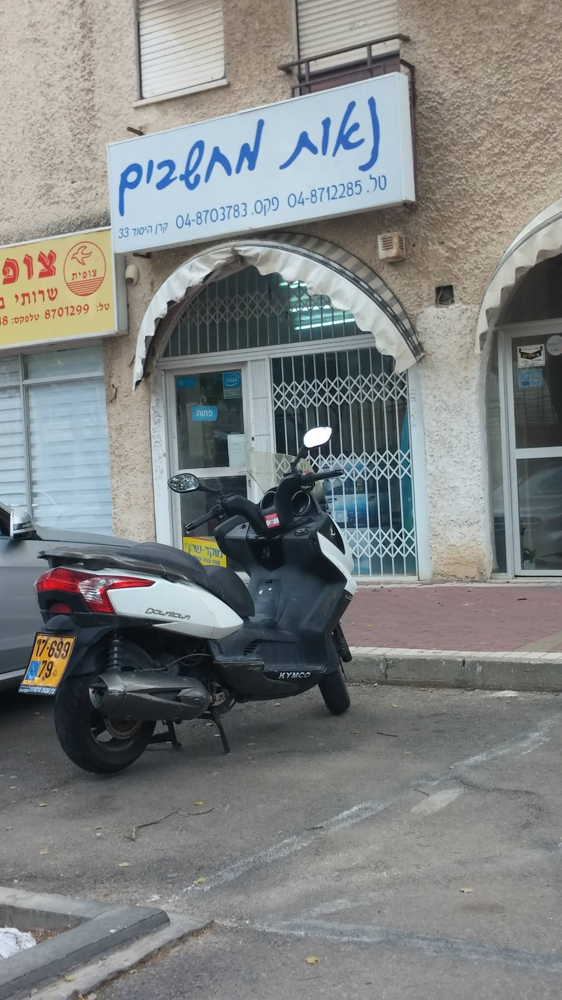
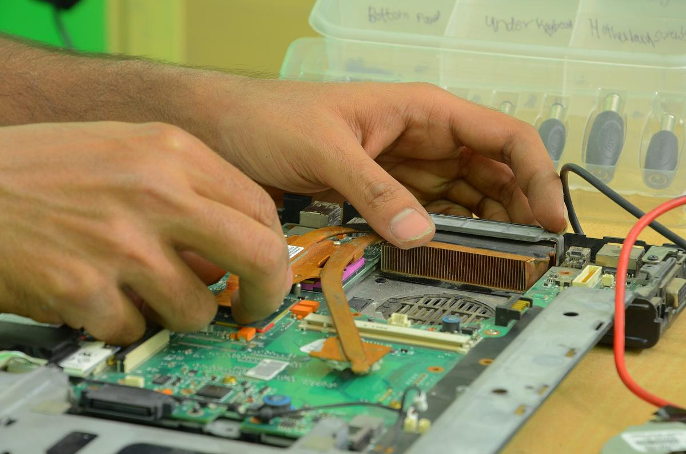
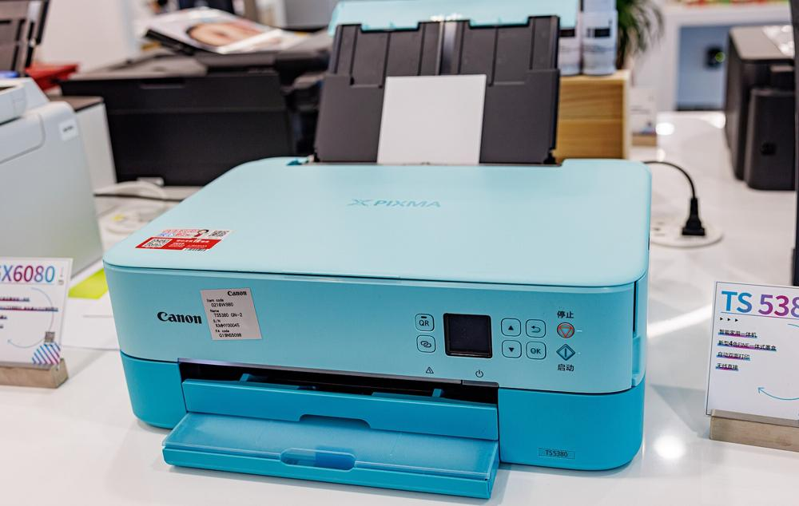
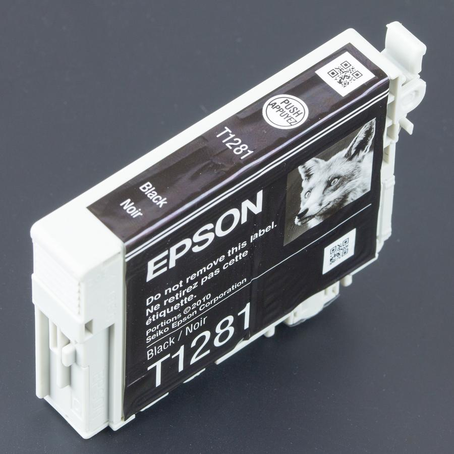
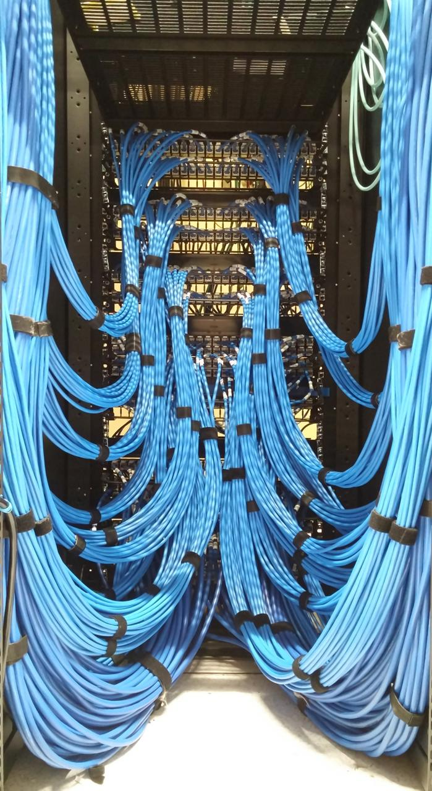
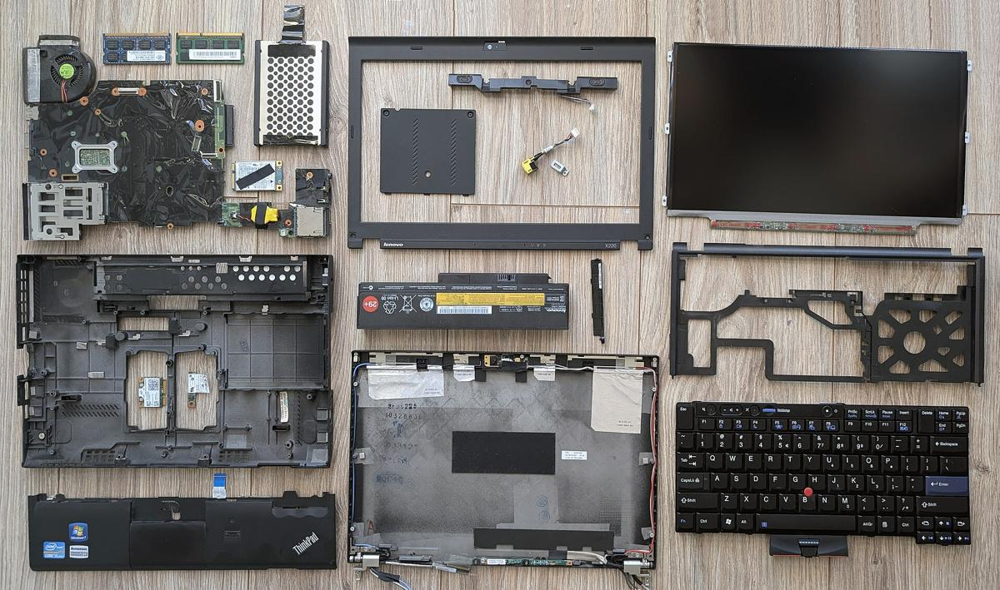
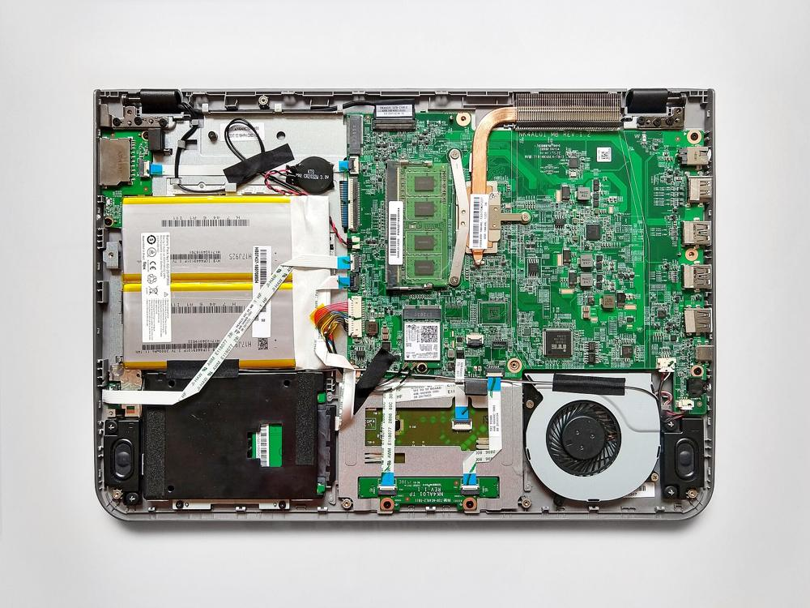
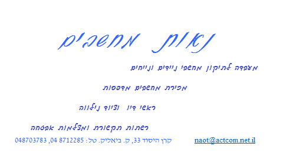
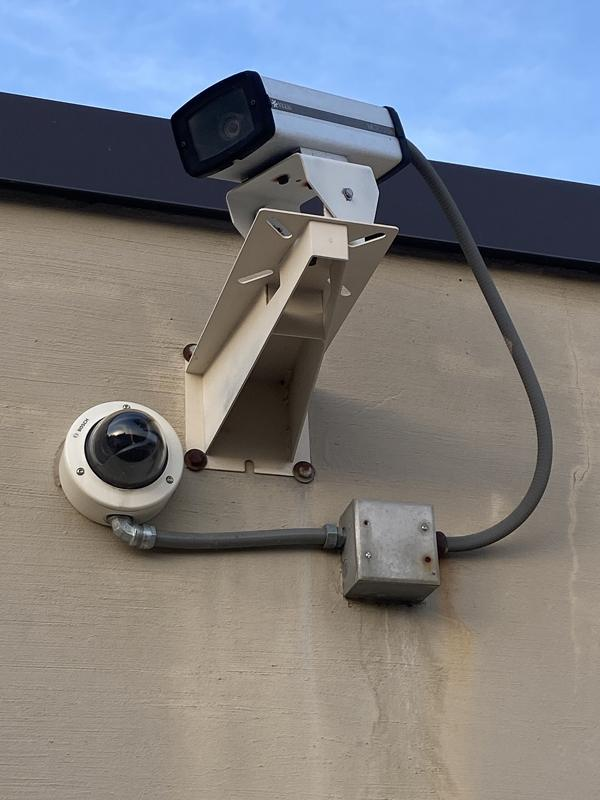

מעבדה לתיקון מחשביםA computer repair lab
ניידים ונייחים, על שולחן העבודה.Laptops and desktops, on the workbench.
קונספט לדוגמה שנבנה עבור נאות מחשבים · זה אינו האתר הרשמי של העסקA sample concept built for Naot Computers · This is not the business’s official website
מעבדה וחנות מחשבים בקרן היסוד 33A computer lab and shop at 33 Keren HaYesod
תיקון ניידים ונייחים, מחשבים ומדפסות, דיו, רשתות ומצלמות אבטחה. בקריית ביאליק.Laptop and desktop repair, computers and printers, ink, networks and security cameras. In Kiryat Bialik.

4.4
29 ביקורות בגוגל29 Google reviews

בדיוק כמו שכתוב בכרטיס הביקור.Just as the business card says.

תיקון מחשביםComputer repair
מחשבים ומדפסותComputers, printers
דיו וציוד נלווהInk, accessories
רשתות ומצלמותNetworks, camerasתמונות להמחשהIllustrative photos
ניידים ונייחים, על שולחן העבודה.Laptops and desktops, on the workbench.


תמונה להמחשהIllustrative photoגררו את הקו, או פשוט גללו.Drag the line, or just scroll.
למכירה בחנות.For sale in the shop.
דיו למדפסת ואביזרים למחשב.Printer ink and computer accessories.
כבלים וחיבור לרשת.Cabling and getting connected.

הכול כתוב עליו.It’s all written on it.

מהמצלמה ועד המסך.From the camera to the screen.
4.4
מתוך 5, לפי 29 ביקורות. כאן ארבע מהן, כלשונן.Out of 5, from 29 reviews. Four of them here, word for word.
לכל הביקורות בגוגלAll reviews on Googleנחום האלוף תודה רבה רבה על השירות שקיבלתי ממך מקצוען אמיתי אדיב צנוע. ממליץ בחום
“Nachum the champ, thank you so much for the service I got from you. A true professional, kind and modest. Highly recommend.”
יוסי מנגדלפני 4 חודשים4 months ago · translated from Hebrew
השארתי אצלם מחשב נייד שהיה מפורק לחלוטין (2 החלקים התנתקו). תיקנו תוך מס׳ ימים והמחשב עובד מצוין. היו אדיבים והמחיר היה הוגן.
“I left them a laptop that had come completely apart (the two halves had separated). They fixed it within a few days and the computer works great. They were kind and the price was fair.”
shahar shabtayלפני 11 חודשים11 months ago · translated from Hebrew
המקום הראשון שאני פונה אליו לענייני מחשבים. אמינים, אדיבים, עם מלא סבלנות. ממליץ בחום לכל מי שחושש מגזלנים.
“The first place I turn to for anything to do with computers. Trustworthy, kind, with lots of patience. Warmly recommended to anyone afraid of being ripped off.”
Yossi Siegelלפני 3 שנים3 years ago · translated from Hebrew
עובד איתם כבר יותר מ 20 שנה, אנשים מקסימים, אחלה שירות ומקצועי... תמיד חוזר אל סיגל ונחום
“I’ve been working with them for more than 20 years. Lovely people, great service and professional... I always come back to Sigal and Nachum.”
Roei Avrahamלפני 3 שנים3 years ago · translated from Hebrew
בוחרים מחסנית, כותבים מה קרה, והדף יוצא בוואטסאפ.Pick a cartridge, write what happened, and the page goes out on WhatsApp.
שליחה בוואטסאפSend on WhatsAppמחשבים ניידים ונייחים, במעבדה שבחנות.Laptops and desktops, in the lab at the shop.
כן, בחנות מוכרים מחשבים ומדפסות.Yes, the shop sells computers and printers.
כן, ראשי דיו וציוד נלווה.Yes, ink heads and accessories.
כן, רשתות תקשורת ומצלמות אבטחה. כתבו לנו מה צריך.Yes, networks and security cameras. Write to us with what you need.
ראשון עד חמישי 9:00–18:00, שישי 9:00–11:30, שבת סגור.Sunday to Thursday 9:00–18:00, Friday 9:00–11:30, closed on Saturday.
קרן היסוד 33, קריית ביאליק.33 Keren HaYesod St, Kiryat Bialik.
קריית ביאליק. בואו לחנות.Kiryat Bialik. Come by the shop.